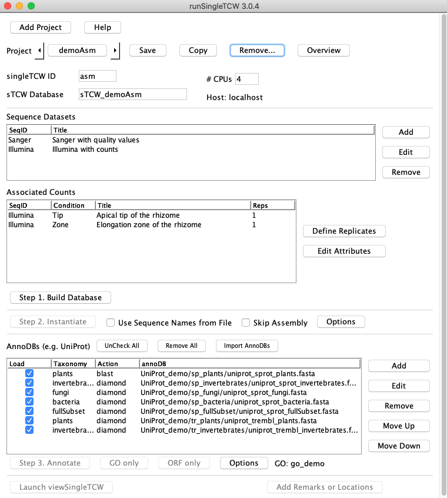

runSingleTCW interface or the script execAssm using the parameter file
projects/<project-name>/sTCW.cfg.
Note that TCW cannot assemble raw RNA-seq reads. Rather, assembly in TCW serves primarily the following purposes:
|
Start by running The project has two libraries, Illumina (an Illumina RNA-seq library) and Sanger( an EST Sanger library). The Illumina transcripts have read counts from two count libraries, tip and zone, reflecting two different tissues of the rhizome. Press the Step 1. Build Database button to create the database and load the data. Then set #CPUs to the number of processors your machine can spare for the assembly (one or two are sufficient for this project). Press Step 2. Instantiate to start the assembly. Make sure the Skip Assembly is NOT checked. When done, it prints a summary (see below). |

|
Transcript with counts and EST libraries | Go to top |
Choosing Read Names | Go to top |
The name of the read is the string immediately following the ">" in the fasta file. For example, if your fasta file contains the lines
>ZM_BFa0001A01.f AAGATCCGCCTCATTCACACCCCCATCTACCTAGCTAGCTAGTTTACCAAAAAAAAATCTGGCCACA GGGATGCGGTGGCGGCTGCAGCCGGCGCCGGCGCCGACGCTGCTCCTCGTCCTGCTGGTG >ZM_BFa0001A01.r AAAAAGCAAAATACAAACCAAGCTCCAGTTCCAATACATTACTCTAGCACAAGCTTTCAG CACATTACAAAGTAGGAACCAAGACCACCCAAGCTCCAATCACACTACAATTCATCACCA
Naming guidelines:
The Assembly Process | Go to top |
| Section Heading | What TCW is doing | Sample duration |
| >>>Delete previous assembly | There was a previous assembly of the same name, which you have selected to delete and start over. This can take a while for big projects!! | 2h |
| >>>Initial bury alignment | TCW sets aside ("buries") reads which are nearly identical to another read, in order to reduce redundant assembly effort. It runs a "self-blast" of all the reads against each other, using Megablast. It then parses the output and saves the buries to the database. | 1h 10m |
| >>>Compute cliques | A clique is a special type of cluster1. TCW groups the reads into cliques and builds the initial contigs from them. To do this it again runs Megablast of the reads against each other, this time using only the non-buried reads. | 1h 10m |
| >>>Clique assembly | Each clique is given to cap3 to assemble. Any leftover read are made into singleton "contigs". | 2h |
| >>>Clique cap buries | The initial contigs from clique assembly are now analyzed for additional reads to bury. Any read lying in a region of 5x or greater coverage may be "cap-buried" in another read whose span in the contig is close enough. This is controlled by sTCW.cfg parameters CAP_BURY_MIN_DEPTH and CAP_BURY_MAX_HANG. For a large project, often over 50% of the clones will be buried by the end of this stage. | 10m |
| >>>Contig merge rounds | Now TCW goes through the contig merge rounds specified by the "TC"2 parameters in sTCW.cfg. For each round it writes out the current contig consensus sequences, blasts them against each other, and attempts to merge each overlapping pair. | 9h |
| >>>Finalize contigs | Mate-pair contigs are joined together by N's. All buried reads are collected and assigned to their correct final contig. Each read is re-aligned to the consensus sequence of its contig, and the SNPs and extras are identified. Suspect contigs are flagged. | 1h 10m |
Assembly Parameters | Go to top |
runSingleTCW interface (press
the Options button in the Assembly section).
Calculation of SNPs and extras | Go to top |
A SNP is possible when one or more read have a different base at some location than is found in the consensus. However, base-calling error can lead to many false positives, so TCW applies two screens to the possible SNPs. First, at least two reads must contain the SNP (you can change this with the SNP_CONFIRM parameter).
Also, a probability score is applied. The probability ('p-value') is computed using a binomial score based on the number of confirming reads, the depth of the contig at that base, and the estimated basecall error rate. The error rate is estimated from mismatches seen in the clique assembly, or it can be set using BASECALL_ERROR_RATE. The p-value threshold can also be set using SNP_SCORE.
When there are extra bases in some reads which are not in the consensus sequence generated by cap3, TCW uses another probability score to determine whether to regard the extras as "real" and add a pad character (*) to the consensus. The score is computed in the same way as for SNPs, and uses the config parameters EXTRA_CONFIRM, EXTRA_RATE, EXTRA_SCORE. Extras not determined to be real are stored in the database and shown in the UI.
The most common cause of this problem is a mismatch in the innodb log file size. The MySQL error log will contain messages like
InnoDB: Error: log file ./ib_logfile0 is of different size 0 5242880 bytes InnoDB: than specified in the .cnf file 0 104857600 bytes!
{kind=link}